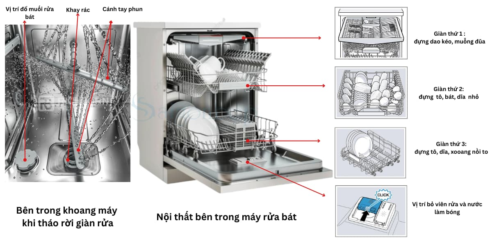
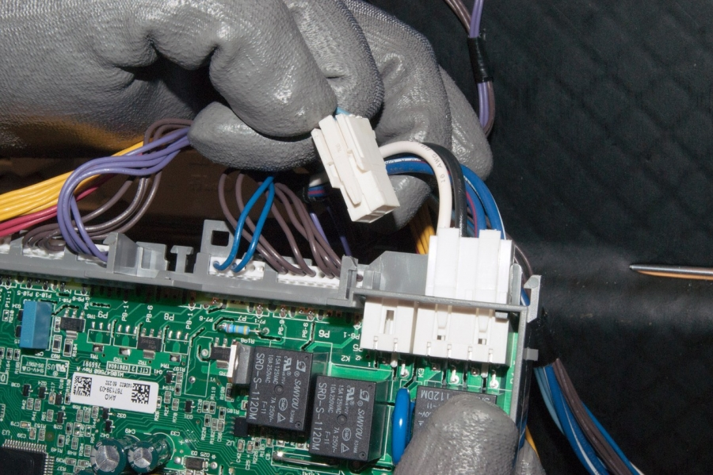

Máy rửa bát là thiết bị gia dụng có hệ thống điều khiển cực kỳ thông minh nhưng cũng rất nhạy cảm. Khác với máy giặt, máy rửa bát sử dụng áp lực nước cực lớn kết hợp nhiệt độ cao và hóa chất tẩy rửa mạnh, do đó các sự cố thường liên quan đến cảm biến, gioăng cao su và hệ thống bơm áp lực.
Bạn đang gặp lỗi E15, E19, E24, ... trên máy rửa bát Bosch? Hay máy Electrolux không nóng nước? Điện Lạnh Bách Khoa với đội ngũ thợ chuyên dòng máy Châu Âu sẽ giúp bạn xử lý ngay tại nhà.
📞 0559763681 - BẤM GỌI NGAY Hoặc Hotline: 0367274152Khi máy gặp sự cố, màn hình LED sẽ hiển thị mã lỗi. Dưới đây là ý nghĩa kỹ thuật giúp bạn nhận biết tình trạng máy:
Đây là linh kiện quan trọng trong máy rửa bát. Bơm nhiệt vừa có chức năng đẩy nước áp lực cao, vừa làm nóng nước. Nếu máy rửa bằng nước lạnh hoặc kêu "u u" nhưng không phun nước, rất có thể bơm nhiệt đã hỏng.
Do đặc điểm khí hậu nồm ẩm tại Hà Nội, bo mạch rất dễ bị ẩm mạch hoặc oxy hóa các đường tín hiệu. Thợ của chúng tôi sẽ tiến hành đo đạc, xử lý lỗi IC hoặc relay để phục hồi bo mạch zin của máy một cách tối ưu nhất.
Máy báo lỗi nước không vào (E14) hoặc nước tràn liên tục. Nguyên nhân thường do van từ bị cháy hoặc cảm biến lưu lượng (Flow meter) bị sai lệch thông số kỹ thuật.
Máy rửa bát là thiết bị đòi hỏi am hiểu về cả Thủy lực và Điện tử:
Chúng tôi cung cấp linh kiện chính hãng cho:


Kiểm tra chuyên sâu hệ thống bo mạch máy rửa bát tại nhà khách hàngTrước khi gọi thợ, quý khách có thể tự kiểm tra 3 điểm sau để tiết kiệm chi phí:
Chuyên dòng máy Bosch, Electrolux - Linh kiện chính hãng
HOTLINE: 0559763681